Sesión 4
Para que un aparato eléctrico cualquiera funcione, necesitamos que los electrones se muevan por su interior (es decir, necesitamos que los atraviese una corriente eléctrica). Un circuito eléctrico es, precisamente, un conjunto de elementos conectados entre sí para hacer que la corriente eléctrica recorra un camino cerrado saliendo de un terminal del generador de voltaje, atravesando los aparatos que queramos hacer funcionar, y volviendo al terminal contrario del generador.
En la siguiente imagen tienes un ejemplo de un circuito eléctrico usado para mover un motorcillo eléctrico y, a la vez, iluminar una bombilla.
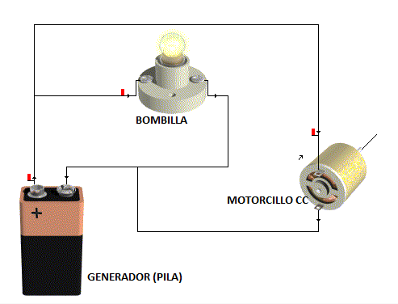
Los conductores (cables) están conectados de forma que la corriente se vea obligada a salir de un terminal de la pila, atravesar tanto la bombilla como el motorcillo para que funcionen y volver al otro terminal de la pila. Si no existieran esos caminos, no podrían funcionar nuestros aparatos. En la siguiente imagen puedes ver el camino que sigue la corriente para hacer lucir la bombilla (en verde) y el camino que sigue para hacer que se mueva el motor (en azul):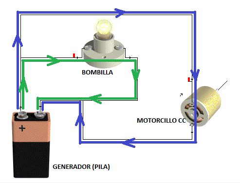
Los circuitos eléctricos pueden llegar a ser muy complejos y estar formados por infinidad de componentes, sin embargo todos ellos están constituidos por elementos que se pueden agrupar en las siguientes familias:- Generadores.
- Receptores.
- Elementos de control.
- Elementos de protección.
- Conductores.
En los siguientes apartados vamos a estudiar cada uno de estos tipos de componentes por separado.
Generadores
Generadores
Los generadores son los elementos que proporcionan la energía necesaria para que las cargas eléctricas puedan circular por el circuito. Para ello transforman otra forma de energía en energía eléctrica y mantienen una diferencia de potencial entre sus bornes. Una pila, por ejemplo, transforma energía química; una dinamo o un alternador transforman energía mecánica; y una célula fotovoltaica transforma energía luminosa.
En los cálculos más sencillos se suele considerar que el generador es ideal y mantiene exactamente la tensión indicada. Los generadores reales poseen una resistencia interna, por lo que la tensión disponible en sus bornes puede disminuir cuando suministran corriente. Esta diferencia explica que la tensión nominal sea un dato de referencia y que el comportamiento real dependa también de la carga conectada.
En corriente continua hay que identificar siempre la polaridad. Al conectar o cargar una batería se deben respetar los polos positivo y negativo, comprobar que el cargador sea compatible y evitar cualquier unión directa entre los bornes, ya que produciría un cortocircuito.
Consulta: tipologías y detalles ampliados
Son los encargados de darnos la energía necesaria para que se muevan los electrones. Es decir, son los que producen el voltaje (o tensión) necesario para que circule una corriente eléctrica.
Los generadores eléctricos son máquinas destinadas a transformar diversos tipos de energía en energía eléctrica.
Los símbolos que podremos utilizar en los esquemas eléctricos para representar un generador de corriente continua son:
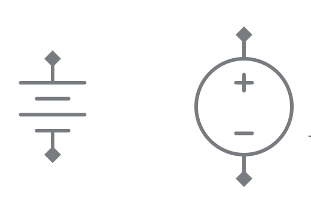
Es indiferente utilizar uno u otro, aunque no se deben mezclar los dos en un mismo circuito. Algunas consideraciones:
- Si se usa el primer símbolo:
- el segmento más largo indica terminal positivo (+) y el más corto indica terminal negativo (-).
- se puede dibujar el símbolo con solo un segmento corto y uno largo, así:
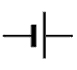
- En el caso del segundo símbolo:
- se indica la polaridad directamente con el (+) y el (-).
- es posible indicar solamente el terminal positivo, en cuyo caso el signo (+) puede ir fuera del círculo, junto al terminal en cuestión.
RESISTENCIA INTERNA DE LOS GENERADORES
A lo largo de este tema consideraremos que los generadores tienen un comportamiento ideal. Un generador de voltaje ideal, es aquel que mantiene un voltaje fijo entre sus bornes independientemente de la resistencia de la carga que pueda estar conectada entre ellos.
En realidad, los generadores no son ideales porque siempre tienen una pequeña resistencia interna Ri. Si consideramos un generador que proporciona una tensión V y lo conectamos a un a carga cuya resistencia es Rc, tendremos un circuito tan simple como este:
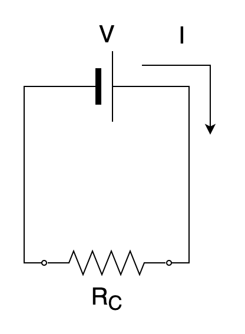
Aplicando la ley de Ohm, vemos que la tensión suministrada por el generador (V) es:| \[V=R_{c}\cdot I\] |
Sin embargo, si "miramos por dentro" al generador, veremos que tiene su pequeña resistencia interna, por lo que, en realidad, el circuito real será así:
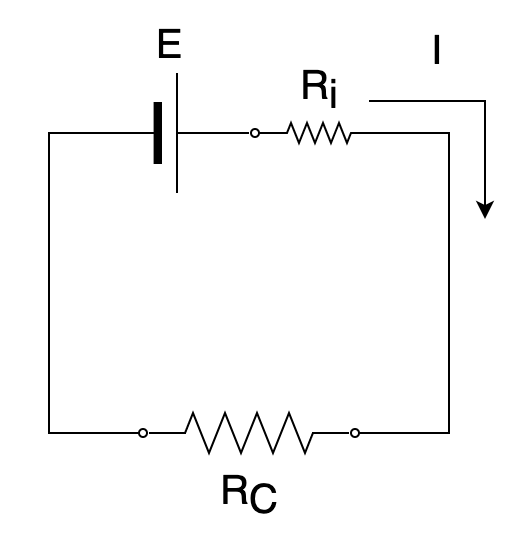
Si aplicamos la ley de Ohm en la resistencia interna del generador, podemos obtener la caída de tensión en dicha resistencia:| \[V_{R_{i}}=R_{i}\cdot I\] |
Y es fácil demostrar que el voltaje en bornes del generador (V) será:
| \[V=E-V_{R_{i}}=E-R_{i}\cdot I\] |
Así, se ve que, si el generador está en vacío(I=0), entonces V = E. Pero, en cuanto lo conectemos a alguna carga y aparezca una corriente eléctrica, la tensión real en bornes del generador será algo menor (V
CARACTERÍSTICAS DE UN GENERADOR
Las magnitudes eléctricas características que identifican un generador ideal de tensión son:
Fuerza electromotriz (f.e.m.)
Se suele denotar con la letra E (como en nuestro caso) y se mide en voltios (V).
Se define como el trabajo que debe aportar el generador para transportar la unidad de carga del polo negativo al positivo por el interior del generador.
Es igual a la diferencia de potencial en los bornes del generador V, mientras el generador esté en vacío, ya que al no haber circulación de corriente (I=0), no habrá caída de tensión en la resistencia interna Ri; pero cuando el generador está en carga V dependerá de la Rc que se conecte al circuito (pues la I depende de ella).
Resistencia interna (Ri)
Se mide en ohmios (Ω) y es la oposición que presenta el generador a la circulación de corriente a su través.
Este elemento no existe físicamente como un componente eléctrico, pero se cuantifica y se representa simbólicamente en el circuito como una resistencia convencional en serie con uno de los bornes del generador, y cuando el circuito está cerrado y circula corriente por él se ocasionan en la Ri unas pérdidas de tensión.
Intensidad nominal (IN)
Es el máximo valor de corriente que puede suministrar el generador, sin que se resienta su funcionamiento normal. Es un dato que proporciona el fabricante y cuando calculamos un circuito se debe tener la precaución de no sobrepasar este valor.
La corriente que circula depende del circuito conectado. El generador solo puede suministrarla con seguridad hasta su intensidad nominal; si se supera, puede caer la tensión, actuar una protección, calentarse o dañarse.
Capacidad de carga
Se mide en amperios-hora (Ah) y expresa la cantidad de carga que puede entregar la batería en determinadas condiciones.
Una batería con una capacidad de carga de 10 Ah puede estar alimentando un circuito que requiera 1 amperio durante 10 horas, o bien 0,5 amperios durante 20 horas y así sucesivamente.
En ocasiones la capacidad de una batería se mide en miliamperios-hora (mAh), cuando la corriente nominal de funcionamiento es del orden de miliamperios en vez de amperios.
TIPOS DE GENERADORES ELÉCTRICOS
Existen diversos tipos de generadores eléctricos, las más habituales son las pilas, las baterías y las fuentes de tensión o corriente:
Pila eléctrica
Dispositivo que genera energía eléctrica a partir de la energía química que tiene acumulada.
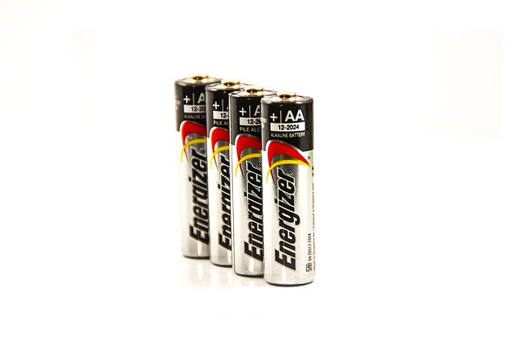
A medida que el generador se va agotando, su resistencia interna aumenta, lo que hace que la tensión disponible sobre la carga vaya disminuyendo, hasta que no sea suficiente para alimentar al receptor, por lo que debe recargarse, o sustituirse por otra.
La energía de la pila resulta accesible mediante dos terminales, llamados polos, electrodos o bornes. Uno es positivo y el otro es negativo.
Baterías o acumuladores
Al igual que las pilas, son dispositivos que generan energía eléctrica a partir de la energía química que tienen acumulada. Su principal diferencia es que son generadores recargables.
Para cargar una batería recargable se utiliza un cargador compatible que aplica la tensión y limita la corriente de acuerdo con su tecnología. La conexión mantiene la misma polaridad: positivo con positivo y negativo con negativo. Nunca se deben invertir los bornes ni improvisar la carga con un generador cualquiera.
Existen diferentes tecnologías de baterías para diferentes aplicaciones. Actualmente, una de las tecnologías más usadas es la de iones de litio. Te dejo un vídeo donde se muestra cómo funcionan estas baterías.
Fuentes de tensión o corriente
Dispositivo que convierte la tensión alterna de la red de suministro, en una o varias tensiones prácticamente continuas, que alimentan los distintos circuitos del aparato electrónico al que se conecta.
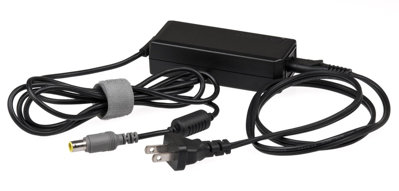
Las fuentes de tensión de corriente continua contienen lo que se denomina un rectificador de corriente, que es un circuito encargado de convertir la corriente alterna en corriente continua. Estos circuitos están construidos con unos dispositivos denominados diodos, que estudiaremos con más detalle en el próximo tema. De hecho, veremos cómo están construidos precisamente estos circuitos rectificadores.
ASOCIACIÓN DE GENERADORES
A veces, una sola fuente de tensión no es suficiente para dar la energía necesaria a todos los receptores del circuito. En esos casos, se recurre a combinar varios generadores y esto se puede hacer de dos maneras distintas:
Asociación en serie
- Se utiliza cuando se requiere alimentar a un receptor con una diferencia de potencial mayor de la que es capaz de proporcionar una sola pila.
- Se realiza conectando el borne positivo de la primera pila con el negativo de la segunda y así sucesivamente.
- El voltaje resultante es igual a la suma algebraica de los voltajes de cada una de las fuentes
- La corriente que atraviesa a todo el conjunto de la asociación será la misma, ya que están conectadas en serie.
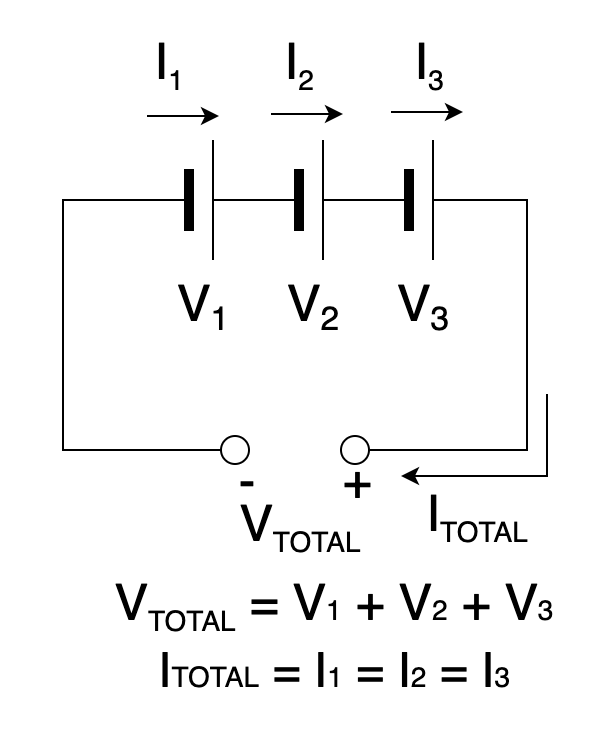
Asociación en paralelo
- Se utiliza cuando se requiere una corriente mayor de la que puede proporcionar un único elemento, aunque su tensión sea la adecuada.
- Se realiza uniendo los polos positivos de todas ellas entre sí, por un lado, y los negativos, por otro.
- En este caso, todos los generadores deben proporcionar la misma tensión.
- El voltaje resultante es el mismo que tienen todos los generadores
- La corriente obtenida es la suma de las corrientes producidas por cada generador.
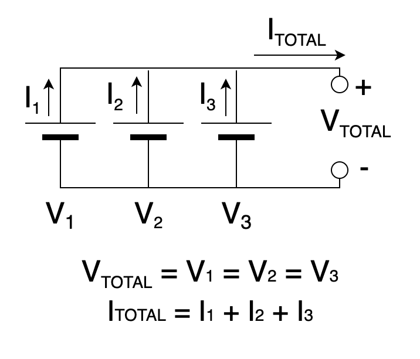
Receptores
Receptores
Los receptores reciben energía eléctrica y la transforman en otra forma de energía útil. Una lámpara produce principalmente luz, una resistencia calefactora produce calor, un motor genera movimiento y un altavoz produce sonido. Al leer un esquema no basta con reconocer el símbolo: también hay que explicar qué transformación energética realiza cada elemento.
En algunos problemas un receptor puede representarse mediante una resistencia constante, pero se trata de una aproximación. La resistencia de una lámpara cambia cuando se calienta y un motor presenta efectos eléctricos y mecánicos que no quedan descritos por una única resistencia.
Si un receptor queda puenteado por un conductor de resistencia muy pequeña, la corriente puede circular por ese camino sin atravesarlo. Se produce entonces un cortocircuito, que puede originar una intensidad muy elevada, calentamiento y daños si no actúan los elementos de protección.
Consulta: tipologías y detalles ampliados
Son los elementos que queremos hacer funcionar con nuestro circuito. Son los aparatos que convertirán la corriente eléctrica que les llegue en algo útil como luz (en el caso de una bombilla), calor (calentador), movimiento (ventilador), etc. Siempre que montemos un circuito será para alimentar a uno o varios receptores.
Si hiciéramos un circuito sin receptores, estaríamos haciendo un camino para la corriente eléctrica desde un terminal de la pila al otro directo y sin oposición. Esto provocaría que circulase una corriente eléctrica muy grande. Tanto, que se calentaría muchísimo tanto el cable como la pila por el efecto Joule. Esto se llama cortocircuito y es peligroso por lo caliente que se pueden poner. Si notas en tus montajes que los receptores no funcionan y la pila se calienta muy deprisa, desconéctala rápido porque es posible que hayas hecho un cortocircuito por error.
El tipo de receptor utilizado nos sirve para clasificar los circuitos en dos categorías:
- Circuitos eléctricos: los receptores de nuestro circuito se utilizan para transformar la energía eléctrica en otro tipo de energía.
- Circuitos electrónicos: nuestros receptores simplemente se usan para controlar o limitar el paso de corriente eléctrica por diversas zonas del circuito.
En algunos cálculos sencillos de corriente continua podemos representar un receptor mediante una resistencia equivalente. Es una aproximación: un motor, por ejemplo, también genera una fuerza contraelectromotriz y no se comporta como una resistencia pura.
Elementos de control y maniobra
Elementos de control
Los elementos de control permiten decidir cuándo circula la corriente y por qué camino lo hace. Un interruptor mantiene el circuito abierto o cerrado hasta que se vuelve a accionar; un pulsador solo cambia de estado mientras se mantiene presionado; y un conmutador selecciona una conexión entre varios recorridos posibles.
En un esquema, un contacto abierto interrumpe el camino eléctrico y un contacto cerrado permite la continuidad. Para interpretar correctamente el circuito hay que seguir las líneas desde el generador y comprobar qué ramas quedan realmente conectadas en cada posición.
El símbolo representa la función eléctrica del dispositivo, no necesariamente su aspecto físico. Por eso conviene aprender a leer primero las conexiones del esquema y después relacionarlas con el componente real.
Consulta: tipologías y detalles ampliados
Permiten interrumpir o dejar pasar la corriente eléctrica cuando nosotros queramos. Pueden ser accionados directamente por nosotros de forma manual, como los pulsadores, los interruptores o los conmutadores, o accionarse automáticamente como los relés. Aunque son similares, se accionan de diferente forma. A continuación puedes ver la diferencia entre ellos:
Interruptor
El interruptor se abre o se cierra manualmente. Cuando le damos una vez, se abre y la corriente se corta. Cuando le damos otra vez, se cierra y la corriente pasa, encendiendo la bombilla en este circuito de ejemplo:
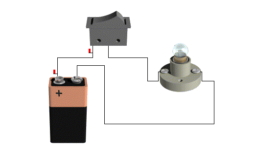
Ojo que con los interruptores hablamos al revés que con los grifos. Cuando un grifo se abre, deja pasar el agua. Cuando un interruptor se abre, corta la corriente y no la deja pasar, mientras que cuando se cierra, sí la deja pasar.Pulsador
En el caso del pulsador puedes observar que, mientras que lo mantenemos apretado, se cierra y la corriente pasa por la bombilla, encendiéndola. Sin embargo, en cuanto dejamos de apretarlo, él solo se abre y la bombilla se apaga:
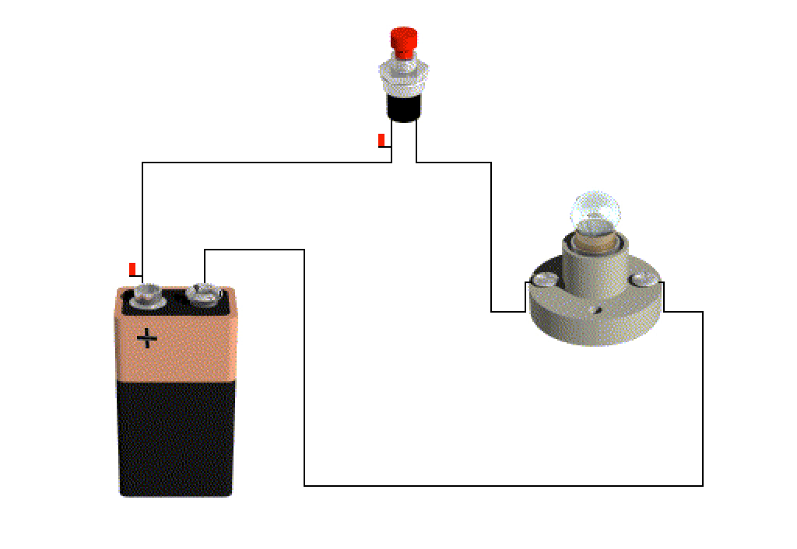
En este caso decimos que el pulsador es normalmente abierto (NA) porque, si no lo tocamos, su estado natural es abierto. Existen otros pulsadores que funcionan al revés; cuando los apretamos se abren y cuando los soltamos se quedan cerrados. Dichos pulsadores se denominan normalmente cerrados (NC).
Conmutador
El conmutador es muy parecido al interruptor en el sentido de que se queda en la posición que lo hayamos dejado (no vuelve "solo" como el pulsador). Sin embargo, tiene tres terminales en lugar de dos. Uno de los terminales es común (en la imagen, el del centro, donde conectamos el positivo de la pila) y lo que hace es que, cuando cierra el circuito entre el terminal central y el de la izquierda, abre el circuito entre el terminal central y el de la derecha y viceversa.
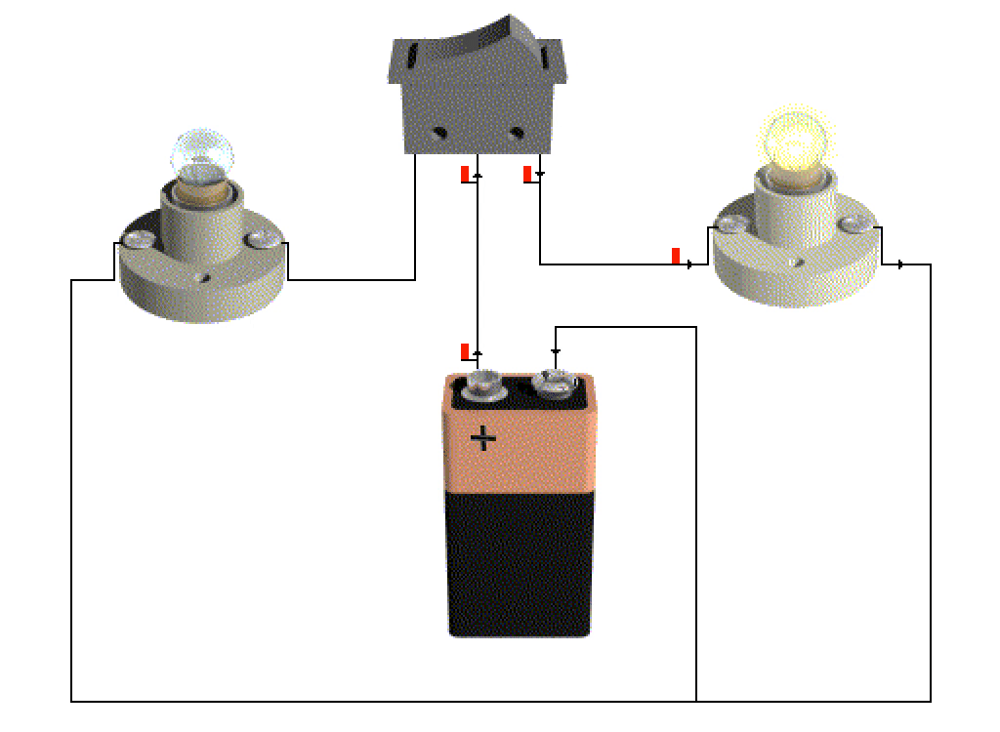
Así, la corriente que entra desde el positivo de la pila saldrá por la izquierda o por la derecha dependiendo de hacia qué lado accionemos el conmutador. Puedes ver que una vez se enciende la bombilla de la izquierda y otra la de la derecha. Es imposible que se enciendan las dos a la vez y también que se apaguen las dos a la vez.
En los circuitos electrónicos es donde más se utilizan dispositivos de control, puesto que lo que queremos es precisamente controlar y modular la corriente eléctrica. El desarrollo de elementos de control que pueden accionarse automáticamente y que, además, no tienen partes móviles fue lo que revolucionó los circuitos electrónicos e hizo posible su gran miniaturización. Estos dispositivos se basan prácticamente en dos: el diodo y el transistor. Ambos serán objeto de estudio más detallado en el próximo tema de circuitos electrónicos.
Elementos de protección
Protección y seguridad
Los dispositivos de protección interrumpen o desvían la corriente cuando aparece una situación peligrosa. No evitan que se produzca el fallo, pero limitan sus consecuencias si están correctamente elegidos e instalados.
| Riesgo | Respuesta básica |
|---|---|
| Cortocircuito o sobreintensidad | Fusible o interruptor magnetotérmico adecuado. |
| Fuga o contacto indirecto | Diferencial, puesta a tierra y aislamiento. |
| Trabajo o manipulación | Desconectar la alimentación y comprobar ausencia de tensión. |
Un fusible se funde cuando la corriente supera durante cierto tiempo el valor previsto y debe sustituirse. Un interruptor magnetotérmico puede rearmarse después de corregir la causa. El interruptor diferencial protege frente a determinadas fugas de corriente, mientras que la puesta a tierra ofrece un camino de baja resistencia para derivarlas.
Nunca se improvisan protecciones ni se trabaja sobre un circuito energizado. Antes de manipularlo hay que desconectar la alimentación, impedir una reconexión accidental cuando sea necesario y comprobar la ausencia de tensión con un instrumento apropiado.
Consulta: tipologías y detalles ampliados
Las instalaciones eléctricas disponen de diversos elementos de seguridad para disminuir el riesgo de accidentes, como los causados por cortocircuitos, sobrecargas o contactos de personas o animales con elementos en tensión.
Cortocircuitos
Un cortocircuito se produce cuando la corriente eléctrica tiene un camino sin resistencia (sólo la pequeña resistencia que tengan los conductores) desde un polo a otro del generador. Recordando la ley de Ohm, nos damos cuenta de que la intensidad de esa corriente tendería a infinito (en la práctica no puede ser infinitamente grande pero sí muy elevada):
| \[I=\frac{V}{R} \\ Si \ R\rightarrow 0\Rightarrow \boxed{I\rightarrow \infty }\] |
Si recordamos también el efecto Joule, el calor que se disiparía sería enorme (pues crece con el cuadrado de la intensidad de corriente). Esto puede provocar incendios e incluso explosiones en entornos peligrosos, por lo que es necesario establecer algún tipo de mecanismo que interrumpa el paso de la corriente muy rápidamente.
Los cortocircuitos pueden producirse por fallos en el aislante de los conductores o por contacto accidental entre conductores aéreos debidos a fuertes vientos o rotura de los apoyos.
Sobrecargas
Las sobrecargas se dan cuando la intensidad de corriente eléctrica que circula por algún punto del circuito es superior a la que se había calculado para ese punto.
Aunque no sea tan grande como la intensidad en un cortocircuito, va a provocar un sobrecalentamiento por efecto Joule que no está previsto y, si se deja mucho tiempo, puede llegar a producir también un incendio o, si se derrite por ejemplo un aislante, a terminar provocando realmente un cortocircuito. Por lo tanto, es recomendable que haya dispositivos que corten la corriente en caso de detectar una sobrecarga que dure un tiempo excesivo.
Las sobrecargas se producen cuando conectamos incorrectamente los receptores. Por ejemplo, enchufando demasiados receptores en una misma toma de corriente usando una regleta.
Contactos eléctricos
Hay contacto directo cuando una persona toca una parte activa que normalmente está en tensión, como un conductor pelado. Hay contacto indirecto cuando toca una masa metálica que normalmente no debería estar en tensión, pero queda energizada por un fallo de aislamiento.
En ambos casos puede circular corriente a través del cuerpo y causar lesiones graves. El aislamiento, la puesta a tierra y los dispositivos de protección reducen el riesgo; nunca se debe trabajar sobre un circuito energizado.
Principales elementos de protección de los circuitos
Fusible
Es un dispositivo compuesto por un soporte y un filamento o lámina de un metal de bajo punto de fusión que se funda por efecto Joule cuando la corriente que lo atraviese supere un determinado valor. Al fundirse el elemento, el camino para la corriente eléctrica se interrumpe y se apaga todo el circuito.
Es un elemento muy barato, pero que hay que cambiar por otro nuevo cuando se funda.
El fusible puede proteger la instalación contra cortocircuitos y contra sobrecargas.
Interruptor magnetotérmico
Es un dispositivo automático capaz de cortar el paso de la corriente eléctrica cuando la intensidad de esta sobrepase ciertos valores máximos.
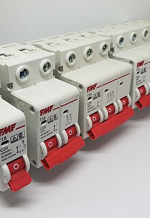
Su funcionamiento se basa en dos de los efectos que produce la corriente eléctrica al circular por un conductor: el efecto magnético (ley de Ampere) y el efecto térmico (efecto Joule). De ahí viene su nombre (magneto-térmico). Por lo tanto, está compuesto por dos partes, un electroimán (para el efecto magnético) y una lámina bimetálica (para el efecto térmico).
Este dispositivo protege tanto contra cortocircuitos (la parte magnética, que es capaz de cortar la corriente en unos 25 milisegundos) como contra sobrecargas (la parte térmica, que tarda más tiempo en cortar porque debe subir la temperatura de la lámina bimetálica).
Interruptor diferencial
Este dispositivo compara constantemente la corriente que entra por un conductor a la instalación con la que sale. Si existe una diferencia entre estos dos valores, significa que hay corriente eléctrica derivándose a tierra en algún punto de la instalación. Como esa derivación puede estar produciéndose a través de una persona, es importante cortar de forma inmediata la corriente siempre que esa diferencia (de ahí el nombre del dispositivo) supere cierto valor. En las instalaciones domésticas el valor de corte es de 0,03 A (30 mA).
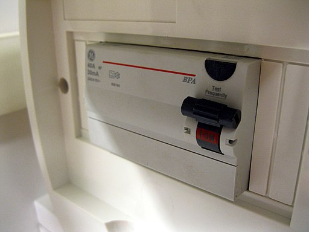
Se distingue de los magnetotérmicos porque incluye un botón de "test" que provoca una derivación artificial controlada al pulsarlo, para comprobar que, efectivamente, el interruptor corta la corriente. Es el dispositivo de protección más importante en una vivienda y por eso hay que comprobar regularmente que funciona bien y reemplazarlo si es necesario.
Conductores
Conductores
Los conductores unen los distintos elementos y forman los caminos por los que circula la corriente. Su resistencia depende del material, de la longitud y de la sección. Por esta razón, un conductor no se elige únicamente porque sea capaz de transportar corriente: también debe limitar las pérdidas y el calentamiento.
El aislamiento debe ser adecuado para la tensión, la temperatura y las condiciones de instalación. La sección se selecciona teniendo en cuenta la intensidad prevista y la longitud del recorrido. Los colores del aislamiento ayudan a identificar funciones, pero nunca sustituyen la comprobación del circuito.
En un esquema, una unión eléctrica debe quedar representada sin ambigüedad. Cuando dos líneas se cruzan, el símbolo utilizado debe permitir distinguir si existe conexión o si simplemente una línea pasa sobre la otra.
Consulta: tipologías y detalles ampliados
Se emplean para conectar entre sí los demás elementos del circuito. Se fabrican de un material muy conductor (de muy baja resistividad), como cobre o aluminio y se recubren de un material aislante para asegurarnos de que los electrones se mueven por dentro del conductor pero no "salen fuera" de este. Coloquialmente a los conductores les solemos llamar cables.
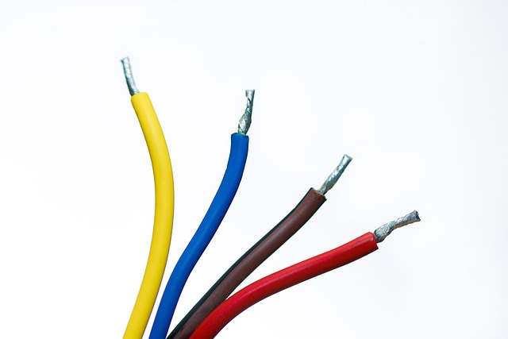
jarmoluk. Cables conductores. Imagen en Pixabay (Licencia de Pixabay)
Los conductores deben estar constituidos por materiales que presenten una baja resistividad, por lo que deben ser metálicos.
De todos ellos el que mejor conduce la corriente eléctrica es la plata (ρAg=0,0159 Ωmm2/m) pero, debido a su alto precio, prácticamente no tiene aplicaciones.
En su lugar se utiliza el cobre (ρCu=0,0171 Ω·mm2/m) que, además de tener una baja resistividad, es muy dúctil, por lo que es fácilmente convertible en hilos.
Muchos cables están formados por numerosos hilos finos en lugar de un único conductor macizo porque así resultan más flexibles y soportan mejor los movimientos. Su capacidad de conducir corriente depende sobre todo del material, la sección total, el aislamiento y las condiciones de instalación.
En el caso de instalaciones domésticas, el aislamiento de los cables sirve además para distinguirlos. Los tres cables principales de una instalación eléctrica de una vivienda se reconocen por estos colores:
- Conductor de tierra: verde y amarillo
- Conductor neutro: azul
- Conductor de fase: negro, gris o marrón (hay tres colores porque hay tres fases en los sistemas eléctricos, aunque en una vivienda solo entrará una de las tres fases)
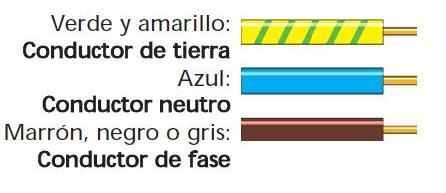
Símbolos eléctricos
Para representar los diferentes elementos de un circuito eléctrico de una forma rápida, clara y esquemática se utilizan una serie de símbolos normalizados. Cuando estudiemos las instalaciones eléctricas en viviendas veremos los diferentes tipos de esquemas eléctricos que podremos encontrar, así como los símbolos normalizados que hay que utilizar obligatoriamente en los planos de las instalaciones. Sin embargo, para esquematizar circuitos eléctricos y electrónicos generales podemos usar un conjunto de símbolos tradicionales ampliamente extendidos.
Existen símbolos para infinidad de elementos de circuitos, aunque con los que te incluyo en esta tabla tendremos suficiente para trabajar en esta unidad:
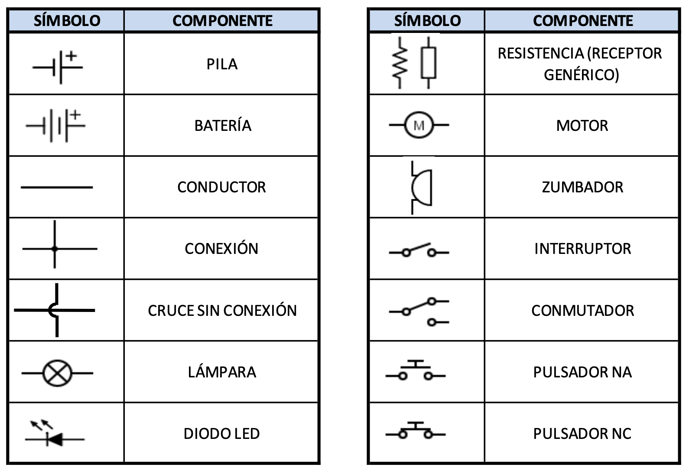
Lectura y dibujo de esquemas
- Localiza en el esquema un generador, un receptor, un elemento de control y cada punto de unión.
- Indica si existe un camino cerrado y marca el sentido convencional de la corriente.
- Dibuja con regla y símbolos normalizados un circuito con pila, fusible, interruptor y dos lámparas en paralelo.
- Intercambia el dibujo: otra persona debe poder reconstruir las conexiones sin preguntarte.
Comprobación
Revisa: símbolos reconocibles, líneas claras, uniones sin ambigüedad, polaridad cuando sea necesaria y protección coherente con el riesgo. Explica qué ocurriría al abrir el interruptor y qué dispositivo actuaría ante un cortocircuito.
Verdadero o falso
Decide si cada afirmación es verdadera o falsa. Lee después la explicación: relaciona la función del elemento con su conexión y con el riesgo que controla.
00:00: